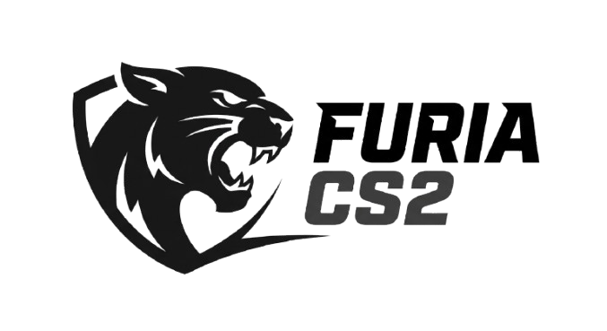

Furia Counter-Strike 2
| Nome | Função | Nacionalidade |
|---|---|---|
| Gabriel Toledo "FALLEN" | IGL | Brasil |
| Yuri Santos "YUURIH" | Anchor | Brasil |
| Kaike Cerato "KSCERATO" | Closer | Brasil |
| Mareks Galinskis "YEKINDAR" | Opener | Letônia |
| Danil Golubenko "MOLODOY" | Awper | Cazaquistão |
| Sid Macedo "SIDDE" | Coach | Brasil |
Quer se aprofundar no desempenho da Pantera? Clique no link abaixo para conferir o histórico completo de mapas, o rating atualizado de cada jogador e todas as estatísticas detalhadas no portal oficial da HLTV.
Acessar HLTV OficialFuria x The Mongolz! Partida classificatória para as Semifinais da IEM BEIJING 2026:
A FURIA se despediu da briga direta pela vaga na semifinal após uma batalha eletrizante de três mapas contra a The Mongolz nas quartas de final da IEM Beijing 2026. A line-up brasileira largou na frente ao dominar a Inferno por 13 a 10, mas os rivais mongóis buscaram o empate em uma Anubis impecável. No mapa decisivo, a Dust2, a Pantera lutou até o último segundo, mas acabou superada no detalhe pelo placar apertado de 13 a 11, fechando a série em 2 a 1 para a The Mongolz. Com o resultado, a FURIA agora joga a sua sobrevivência nos playoffs na repescagem das quartas contra a BetBoom.
A FURIA abriu a série vencendo a Inferno por 13 a 10, mas acabou sofrendo a virada por 2 a 1 após perder a Cache (13 a 8) e a Dust2 no detalhe (13 a 11). Com a derrota na fase de grupos, a equipe brasileira perdeu a vaga direta na semifinal e agora decide sua sobrevivência nos playoffs nas quartas de final contra a BetBoom.
Fique por dentro das próximas partidas da Pantera em busca do topo do campeonato:
| Campeonato | Confronto | Fase | Horário / Status |
|---|---|---|---|
| IEM Beijing 2026 |
FURIA |
Quartas de Final | Sexta-feira - 06:45h (BO3) |
| IEM Beijing 2026 |
FURIA |
Semi Final | Sábado - 06:45h (BO3) |
| IEM Beijing 2026 | - | Final | Domingo - 04:30h (BO5) |